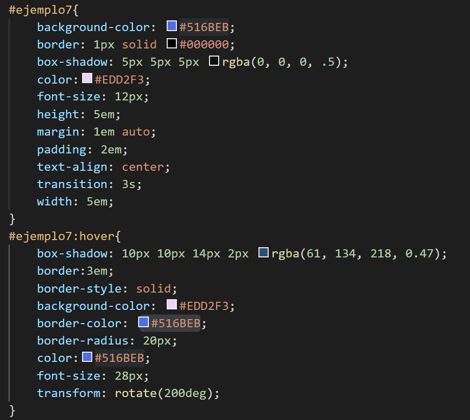

Combinación de Transiciones
Las transiciones en CSS pueden combinarse y alterar los elementos del documento HTML en distintos aspectos, enriqueciendo visualmente nuestra pagina.
Para entenderlo mejor sitúa el ratón en el recuadro que tenemos debajo y observa las distintas transformaciones tanto en colores, forma, bordes, sombras...
Transiciones

Recuerda que la buena utilización de las transiciones implica el uso del sentido estético, la sobrecarga de este tipo de recursos pueden causar rechazo en el usuario, así como su buen uso, puede resultar muy atractivo.